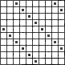

Find the smallest number of pawns that can be placed on an n x n board such that no row or column contains k adjacent unoccupied squares. Assume that n/2 < k ≤ 2n/3.
Solution
Answer: 4(n - k).
Label the squares from 0 to n-1 along each axis. Put pawns on the squares (i, j) with i + j = k-1, 2k-1 or 3k-1. That gives three diagonal lines (or sometimes only two) as shown below (n = 10, k = 6). Note that i, j ≤ n-1 < 2k-1, so i + j < 4k-1, so a pawn goes on every square with i + j + 1 = 0 mod k. It is immediate that no row or column contains k adjacent unoccupied squares. The first diagonal row has k pawns, the second has (2n - 2k) and the third has (2n - 3k). So in total they contain 4(n - k) pawns. We have to show that we cannot do better.

Divide the board into 9 blocks. The corner blocks are (n-k) x (n-k), the center block is (2k-n) x (2k-n) and the others are rectangles, as shown below. Suppose that the middle top block has b rows without pawns. Then there must be at least one pawn in each such row in the block to the left (or the row would have n-k + 2k-n = k adjacent squares without pawns) and another in the block to the right. Similarly, if there are h rows without pawns in the middle bottom block. Similarly, if there are d columns without pawns in the middle left block and f columns without pawns in the middle right block. Note that this may result in double-counting the pawns in the corner blocks.
| n-k | 2k-n | n-k | | | | | n-k | | --b-- | | ------------------------------ | | | | | d | | f | 2k-n | | | | ------------------------------ | | | | | | --h-- | | n-k | | | |There are also n-k-b rows with a pawn in the top middle block, and similarly for the other three blocks. So in total, allowing for the possible double counting, there are at least (n-k-b) + (n-k-h) + (n-k-d) + (n-k-f) + (2b + 2h + 2d + 2f)/2 = 4n - 4k pawns.

© John Scholes
jscholes@kalva.demon.co.uk
10 Oct 2002